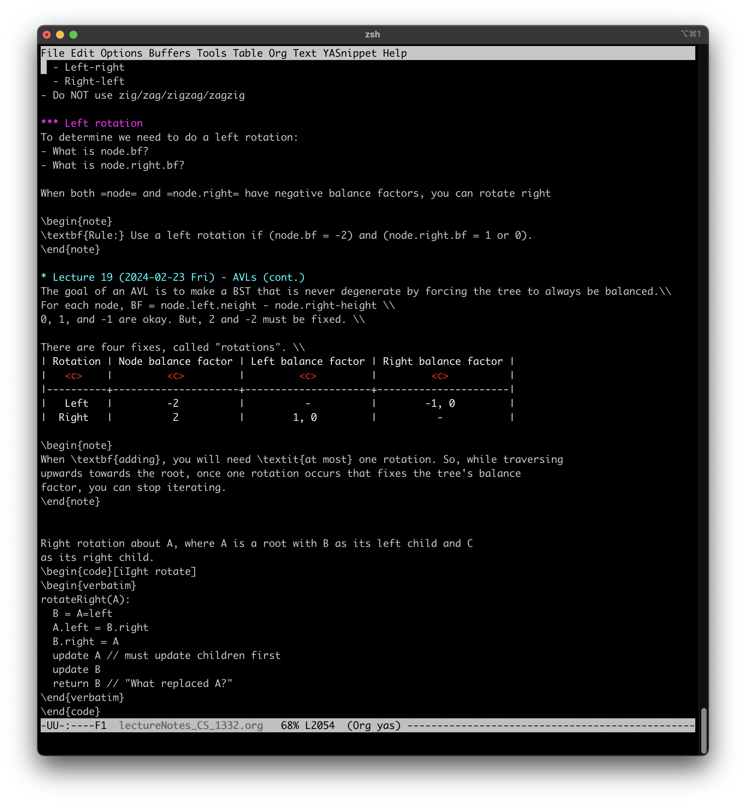

Emacs note-taking system
Table of Contents
Overview
During CS classes, I take notes using a combination of Emacs Org-mode and LaTeX. This allows me to take notes in a markdown-like environment, but compile it into clean PDFs. Emacs is highly configurable, and I have really enjoyed using various features to take notes quickly and elegantly during class. The following notes were taken in real-time and were not reformatted/modified after the lecture.
Why?
For my Discrete Math class, we often use mathematical and logical symbols such as AND (\(\land\)), OR (\(\lor\)), FOR ALL (\(\forall\)), etc. These symbols make typed notes particularly difficult. However, we often need to write out full sentences to provide conclusions for our proofs, which poses a challenge for handwritten notes.
One possible solution is to take notes in LaTeX, which would help with both
formatting and speed. However, I often found it difficult to type the
\begin{center}, \begin{tabular}, and other LaTeX tags.
The solution I preferred was to use Emacs Org, which allows me to take readable notes in a markdown-like environment, but insert LaTeX snippets and colored boxes without much trouble.
Note-taking process

Figure 1: Unrendered notes in Emacs
Here is an example of some un-rendered notes. Most of the time, during class, this
is what my screen looks like. I configured several Emacs snippets using the YASnippet
plugin to insert the \begin{verbatim} and \end{verbatim} lines at the end, which
formats the output in a gray, monospace box.
Figure 2: Rendered notes
Reflection
Overall, this "project" has been really interesting. I did not start the semester planning on learning a new system for note-taking, but this was a solution I stumbled upon. For the most part, this project has drastically improved my proficiency in Emacs as a super-customizeable text editor, and with Org-Mode specifically. (If you couldn't tell, this portfolio website is written in Emacs, using Org's export mode to convert it to HTML!)
However, there are several things I would do differently if I were to re-learn these skills from the ground up.
- Configure YASnippets first. If I had learned how to use this plugin earlier in the semester, I would have been able to save significant time while learning the LaTeX shortcuts.
- Learn LaTeX separately. Part of what made Org difficult at the very beginning is that Org generated LaTeX, which exported to a PDF. If I was not happy with the PDF formatting, it was difficult to tell if the issue was with Org's formatting or with LaTeX. If I had learned pure LaTeX separately, it would have made the learning curve much less steep.
- Consider other options. I do not regret using Emacs Org-Mode, but I would not necessarily recommend this as a note-taking system. I chose this over Notion and Obsidian because I felt it would have more customizability, and because I already had prior experience with Emacs. If someone is looking to learn a new note-taking system, though, I would either recommend Obsidian or NeoVim, since those have more recent documentation and cross-platform compatibility.